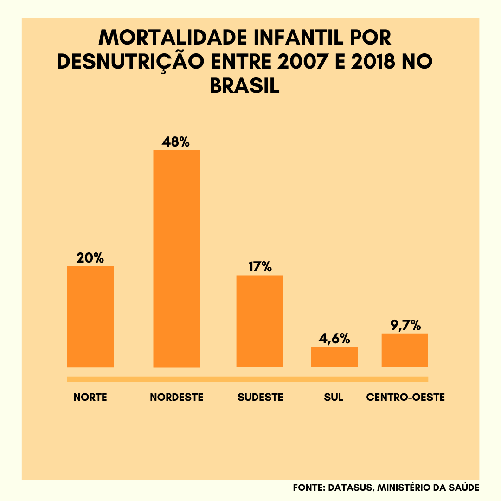
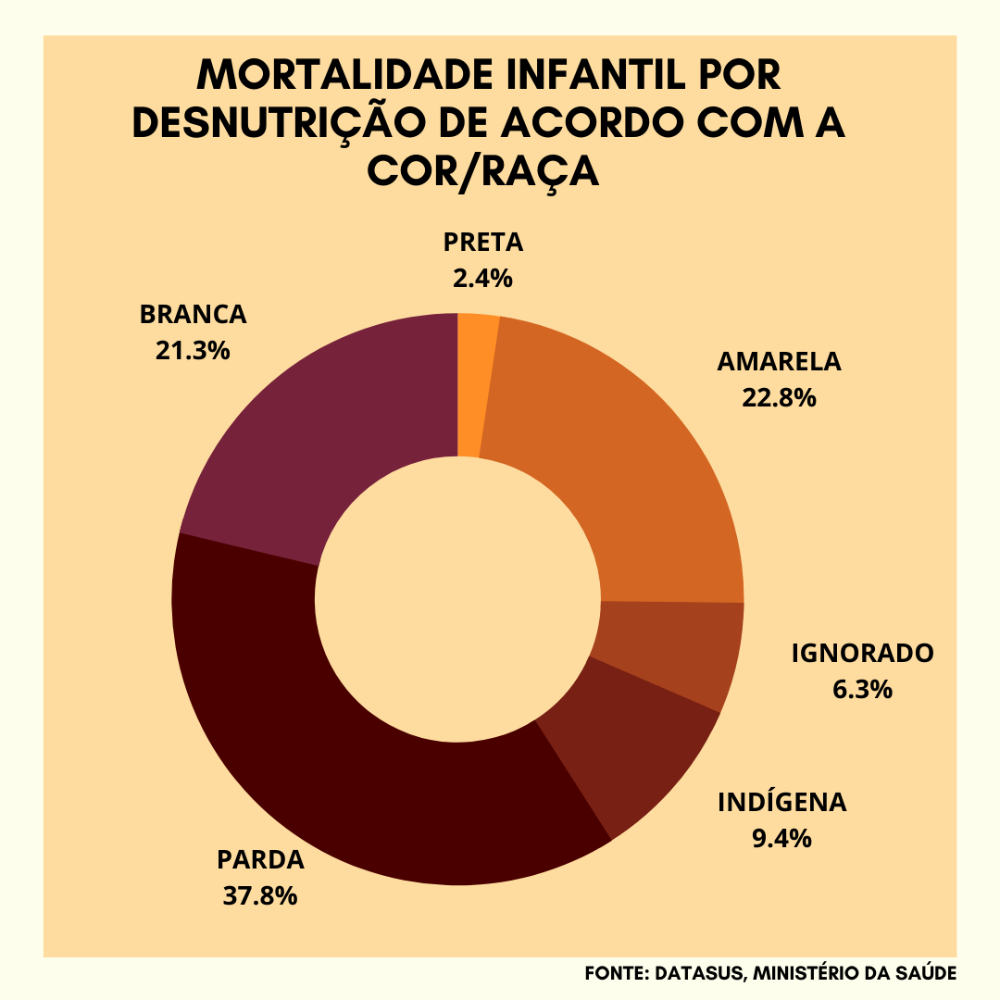

Fome provém da falta de alimentos que atinge um número elevado de pessoas no Brasil e no mundo. Apesar dos grandes avanços econômicos, socias, tecnológicos, a falta de comida para milhares de pessoas no Brasil continua. Atualmente cerca de 32 milhões de pessoas não tem acesso ao alimento, esse processo é resultado da desigualdade de renda e desigualdade social.
O Brasil é o maior país da América do Sul em área territorial e a maior economia da América Latina e suas diversidades climática favorece uma terra fértil capaz de produzir excedentes alimentares suficientes para toda população. O alimento é um direito de todos, mas diante de uma sociedade capitalista que privatiza tudo tirando o direito á alimentação das pessoas deixando-as em uma miséria total, em outras palavras que tem direito a uma alimentação digna passa a ser aqueles que têm poder de compra.
Quatro de cada dez famílias não tem acesso a quantidade e qualidade de comida. Isso demostra que essa parcela da população precisa limitar o tipo ou a porção dos alimentos que vão á mesa, ou até passar a fome.
Segundo os dados das últimas Pesquisa de Orçamentos Familiares do IBGE (Instituto Brasileiro de Geografia e Estatísticas) realizada em julho de 2017, último censo, mostra que a situação de fome piorou, os números são extremamente elevados, tendo em vista a extensão territorial do país que a apresenta grande potencial agrícola.
As Ongs têm papel fundamental nesse panorâmico em ajudar essa parcela da população que passa por dificuldades alimentares, mas é muito difícil conseguir ajuda financeiras
nesse momento, até mesmo antes da pandemia as arrecadações já eram bem escassas, mas mesmo assim conseguia suprir necessidade. É importante olhar para o papel fundamental
das ongs em penetrar em ambientes de difícil acesso principalmente do governo, para efetuar papel de ofertar o apoio rápido e eficiente a população carente.”
O IBGE classifica o problema em três níveis nomeados de “níveis de insegurança alimentar” são eles: Leve quando existe a preocupação com a quantidade e com a qualidade dos alimentos. Moderada existe limitação na quantidade de alimentos. Grave quando existe a fome decorrente da real falta de alimentos.
Representando os dados do DATASUS em média 6.371 mortes por ano e 17 mortes por dia decorrente de complicações de desnutrição, um número equivalente entre os anos de 2008 e 2017, conforme o ultimo dado de registro de 63.712 mortes ao todo.
Observando o Brasil a partir de 1980 até a atualidade nota-se a preocupação que os governantes têm em combater a fome no país, ora criando programas, ora modificando-os, sempre com o mesmo objetivo. Durante os últimos anos, aumentou o fornecimento de energia elétrica, tendo um considerável aumento de produtos alimentícios e de um enorme crescimento industrial, mas pouco disso serviu para combater a pobreza.
Por que as crianças são as principais vítimas?
A desnutrição em crianças tende a ser mais devastadora em menores de cinco anos porque nesta fase da vida o sistema imunológico delas fica muito fragilizado e menos resistente às doenças, afirma a neonatologista Vanessa Mouawad, do Hospital Albert Einstein.
“Um resfriado, uma diarreia é capaz de matar uma criança desnutrida. E nos menores de dois anos, que estão em pleno desenvolvimento, o déficit nutricional pode impactar física e mentalmente”, diz.
Uma criança desnutrida é visivelmente muito magra e apresenta quadros alternados de sonolência e irritação, apatia, dificuldade de fixar conteúdos e pode até apresentar problemas respiratórios. E nos casos de desnutrição crônica, elas têm diminuição de estatura. “A longo prazo, os estudos de epigenética mostram que o corpo tem propensão a doenças se ele não for nutrido adequadamente. Crianças alimentadas deepigenética mostram que o corpo tem propensão a doenças se ele não for nutrido adequadamente. Crianças alimentadas de forma errada no começo da vida serão adultos doentes”, diz Mouawad. A neonatalogista explica que a amamentação é uma forma de manter a criança bem nutrida até um ano de idade. Mas, a desnutrição da mãe também pode afetar a qualidade do leite materno. “O ideal seria essa mãe também ser cuidada, tomar pelo menos três litros de água por dia, se alimentar bem, mas em uma situação de fome sabemos
que nem sempre isso é possível, infelizmente”, opina. “Uma alimentação com base no arroz com feijão, verduras e em frutas como bananas podem ajudar a nutrir o organismo das crianças e adultos e evitar a desnutrição severa”, finaliza Mouawad. Organizações internacionais também mostraram sua preocupação com o agravamento da desnutrição infantil no mundo devido a pandemia, como é o caso da Unicef. A agência da ONU chegou a conclusões sobre o assunto a partir de uma pesquisa feita pela revista médica “The Lancet”, publicada em 27 de julho, que faz um alerta sobre as consequências da atual crise na alimentação das crianças. “Passaram sete meses desde que foram relatados os primeiros casos de Covid-19 e é cada vez mais claro que as consequências da pandemia estão a prejudicar mais as crianças do que a própria doença”, afirmou a diretora-executiva da UNICEF em um comunicado, Henrietta Fore, a partir do resultado da pesquisa. “A pobreza e a insegurança alimentar aumentaram. Os serviços essenciais e as cadeias de abastecimento de alimentos foram interrompidos. Os preços dos alimentos dispararam. O resultado é que a qualidade dos regimes alimentares das crianças diminuiu e as taxas de desnutrição vão aumentar”, acrescentou.


Como a fome afeta o organismo?
O corpo precisa de nutrientes para funcionar e se desenvolver organicamente, sexualmente e cognitivamente,
grande parte deles vem dos alimentos, afirma o endocrinologista Nelson Vinícius Gonfinetti, do Instituto Castro. “Se você não tem nutrientes, o corpo vai atrasando o desenvolvimento. Crianças desnutridas demoram para entrar na puberdade, atrasam seu crescimento e ficam menores, tudo isso para preservar o funcionamento do organismo”, afirma o endocrinologista.
Por isso, para um bom desenvolvimento, a criança e o adulto precisam ter uma alimentação balanceada e equilibrada, com uma quantidade mínima de proteína, gorduras e carboidratos, que cada corpo precisa para manter seu funcionamento e garantir seu desenvolvimento.
“Toda alimentação desequilibrada, com excesso de ultraprocessados ou rica em carboidratos e gorduras, e pobre em vitaminas e proteínas, causa desequilíbrio e consequentemente a desnutrição”, diz Gonfinetti.
A desnutrição é constatada pela correlação entre peso e altura, medido pelo índice de massa corpórea (IMC). Pessoas com IMC menor do que 17 já podem ser consideradas desnutridas.
Junto à má alimentação vêm os efeitos metabólicos do excesso de gordura e carboidratos na alimentação. Além de desnutridas, estas pessoas têm maior disposição a desenvolver colesterol alto e diabetes ao longo do tempo.
Embora as doenças crônicas atinjam mais os adultos, crianças que se alimentam mal tendem a sofrer as consequências no futuro, com risco maior de desenvolver as mesmas doenças. “Quanto mais avançar a idade, pior se torna o quadro metabólico”, diz Gonfinetti.
{kind=link}